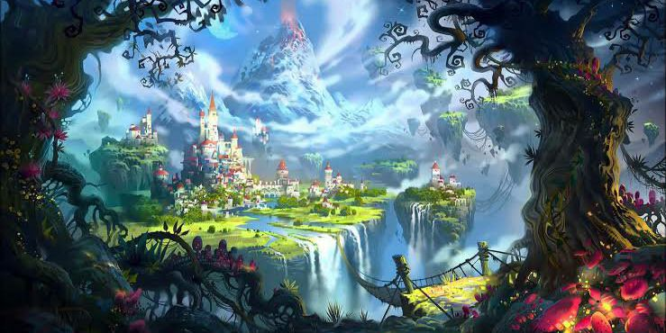

Livros de Fantasia
Encontre aqui as informações sobre os seus livros de fantasia favoritos!
A Guerra dos Tronos
George R. R. Martin
Sinopse
A guerra dos tronos é o primeiro livro da série best-seller internacional As Crônicas de Gelo e Fogo, que deu origem à adaptação de sucesso da HBO, Game of Thrones. O verão pode durar décadas. O inverno, toda uma vida. E a guerra dos tronos começou. Como Guardião do Norte, lorde Eddard Stark não fica feliz quando o rei Robert o proclama a nova Mão do Rei. Sua honra o obriga a aceitar o cargo e deixar seu posto em Winterfell para rumar para a corte, onde os homens fazem o que lhes convém, não o que devem... e onde um inimigo morto é algo a ser admirado. Longe de casa e com a família dividida, Eddard se vê cada vez mais enredado nas intrigas mortais de Porto Real, sem saber que perigos ainda maiores espreitam a distância. Nas florestas ao norte de Winterfell, forças sobrenaturais se espalham por trás da Muralha que protege a região. E, nas Cidades Livres, o jovem Rei Dragão exilado na Rebelião de Robert planeja sua vingança e deseja recuperar sua herança de família: o Trono de Ferro de Westeros.
A Fúria dos Reis
George R. R. Martin
Sinopse
Nesta emocionante sequência de A guerra dos tronos, George R. R. Martin cria uma obra incomparável. A fúria dos reis nos transporta para um mundo de festas e vinganças, feitiçaria e disputas, diferente de tudo que já foi feito. Um cometa da cor de fogo e sangue corta os céus. E, da antiga cidadela de Pedra do Dragão às costas áridas de Winterfell, reina o caos. Em A fúria dos reis, seis facções disputam o controle de uma terra dividida e o direito de ocupar o Trono de Ferro de Westeros – e estão dispostos a encarar tempestades, levantes e guerras para isso. Nesta história, irmão trama contra irmão e os mortos se levantam para caminhar pela noite. Aqui, uma princesa se disfarça de menino órfão, um cavaleiro se prepara para encarar uma pérfida feiticeira e bárbaros descem das Montanhas da Lua para saquear os campos. Em um contexto de incesto e fratricídio, alquimia e assassinato, a vitória será dos homens e mulheres que possuírem o mais frio aço... e o mais frio coração. Pois, quando se desperta a fúria dos reis, a terra inteira treme.
O Último dos Magos
Lisa Maxwell
Sinopse
Na Nova York dos dias atuais, a magia antiga e natural está quase extinta. Os poucos que ainda têm afinidade com ela – os Mageus – vivem nas sombras, escondendo o que são. Além disso, qualquer Mageus que adentre Manhattan é capturado por uma armadilha: a Beira, uma barreira invisível que os deixa permanentemente presos à ilha. Atravessar a fronteira estabelecida pela Beira significa perder os poderes – e, frequentemente, a própria vida. A jovem Esta é uma ladra talentosa e cresceu sendo treinada para roubar artefatos mágicos da Ordem, organização misteriosa criadora da Beira. Esta também tem uma habilidade inata: manipular o tempo. A jovem é capaz de furtar objetos do passado, coletando-os antes mesmo que a Ordem perceba que ela está lá. Mas todo o treinamento de Esta tem sido para uma tarefa maior: viajar até o ano de 1902 para roubar um livro antigo. Acredita-se que o Livro contém todos os segredos da Ordem – e da Beira. A missão de Esta é furtá-lo antes que o Mago o destrua, garantindo assim um futuro melhor a todos os que têm afinidade com magia. Mas a Nova York do início do século XX em que Esta deve mergulhar é perigosa e sem leis, comandada por gangues e sociedades secretas. Um lugar em que é possível sentir magia até no ar que se respira. Nada é o que parece, nem mesmo o Mago. E, para salvar o próprio futuro, Esta deve trair a todos no passado – sem exceção.
A Ladra do Demônio
Lisa Maxwell
Sinopse
Os pais de Esta foram assassinados. Sua vida, roubada. E tudo que ela sabia a respeito da magia era mentira. Ela acreditara que o Ars Arcana, o Livro que contém a origem da magia, guardaria a chave para libertar os Mageus do domínio da Ordem. Mas o perigo contido em suas páginas é muito maior do que imaginara. Agora, o imensurável poder do Livro está em Harte. E se ele não for capaz de controlá-lo, a força do Ars Arcana destruirá o mundo para vingar-se, utilizando-se de Esta para tal. A fim de sintetizar o poder, Esta e Harte precisam localizar quatro pedras elementais espalhadas pelo continente. Porém, o mundo fora da cidade não é bem como eles esperam. Há Mageus além da Beira nem um pouco dispostos a viver nas sombras – e a Ordem não está sozinha em sua missão de destruí-los. Na extravagante Feira Mundial de Saint Louis está escondida a primeira pedra. E um velho inimigo está à espreita enquanto emerge um novo. Em Nova York, no limiar do caos, Viola e Jianyu devem enfrentar um traidor. Neste segundo volume da série best-seller "O Último dos Magos", passado e futuro colidem. Reinventar a História é uma batalha contra as horas – até mesmo para uma ladra viajante do tempo.